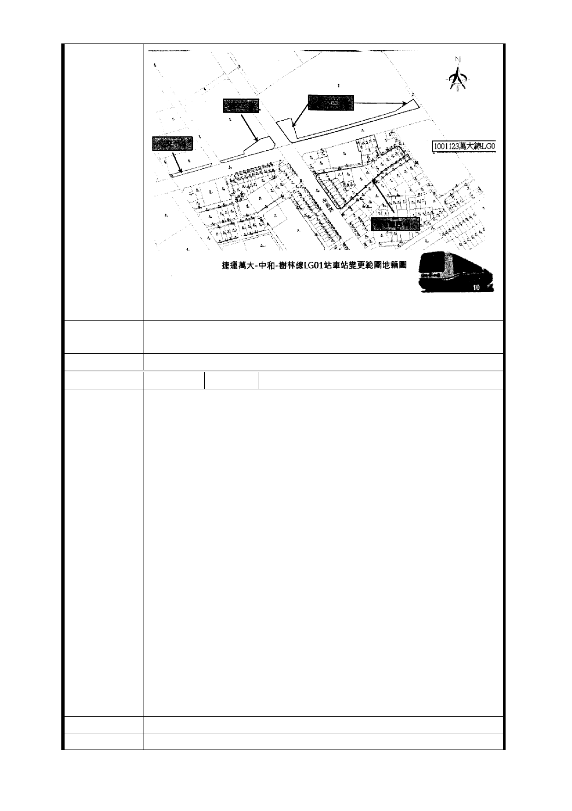

建議辦法
市府回應
意見
同編號捷四-3 回應意見。
委員會決議 同編號交一－1 委員會決議。
編 號 捷四-3D 陳情人 張鄧○妹（101.4.17）
主旨：有關貴會 101 年 3 月 15 日召開「配合台北市捷運萬大
－中和－樹林線工程變更沿線土地為交通用地及土地開發區
（捷）主要計畫案」及「擬訂台北市捷運萬大－中和－樹林
線土地（捷）暨劃定都市更新地區細部計畫案」第一次專案
小組審查會議紀錄未將反對列為出口之意見列入，特此申明
LG01 站體出入口 B 強行規劃獨立產權透天店面（呈凸狀）當
出入口，規劃設計明顯不當，於法、於理、於情均非屬必要
，陳情人反對強徵民宅列為出入口處，請查照。
說明：
陳情理由
一、本案會中專家學者置疑 LG01 站體奇形怪狀？此塊區域究
竟需要空間多大？真正需要用地要多少？是否應有更整體性
的規劃？相關單位均未有明確回應。又離譜的是南海路此段
始自南門市場終至市警局止，頭、尾臨十字路口均屬市有土
地不思規劃，竟規劃從一條路的中間最好拆的獨立店厝當出
口，致整片土地呈凸狀，規劃內容非常不合理。
二、本案不得以世居此地住戶者土地單純最好拆方式，強行
圈劃，整塊土地呈凸出狀，十分荒謬，明顯不方正，猶如士
林文林苑之翻版，規劃單位不得便宜行事規劃，強搶民地，
罔顧人民權益，踐踏居住正義，請重新審視 LG01 車站計畫並
變更出入口 B 設計。
建議辦法
市 府 回 應 同編號捷四-3 回應意見。
- 26 -